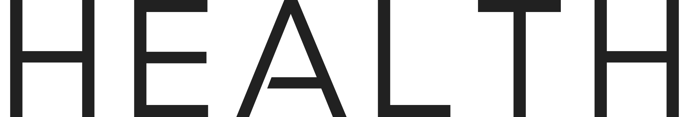
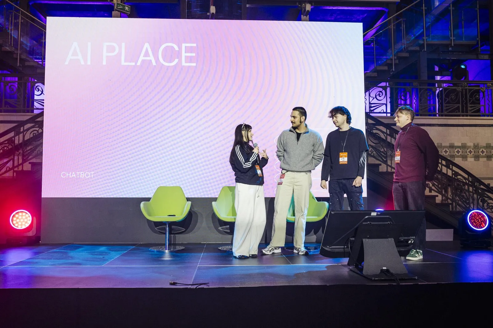
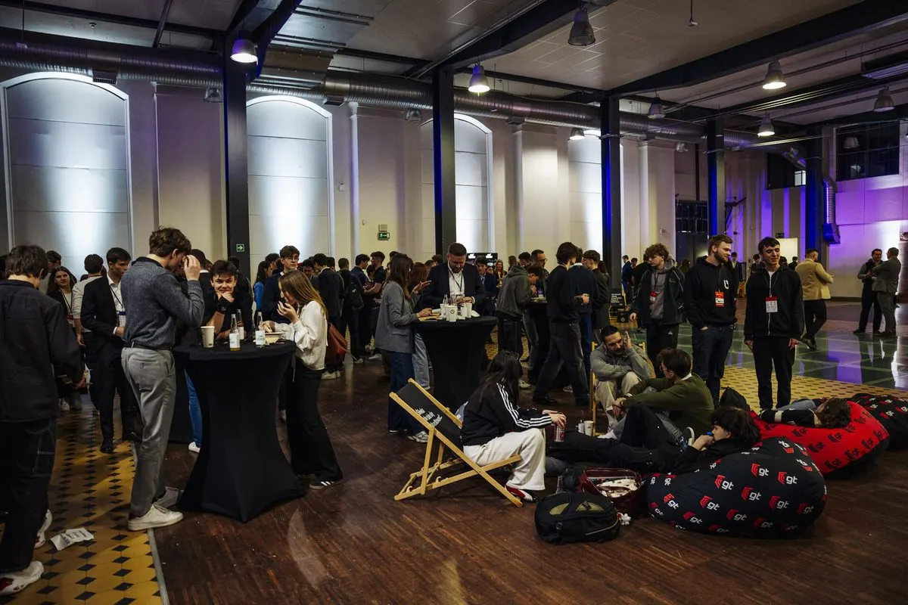
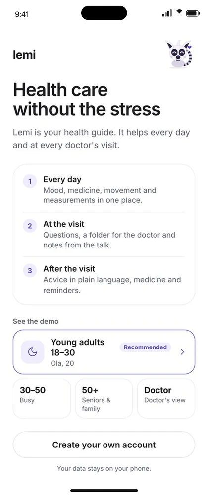
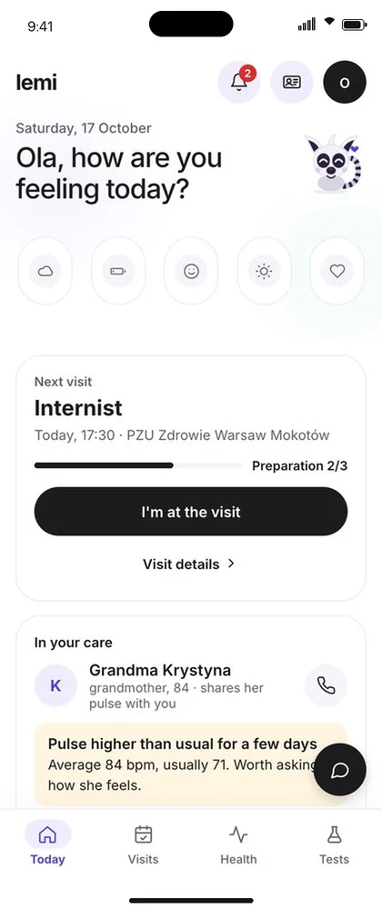
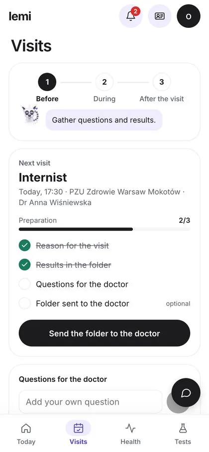
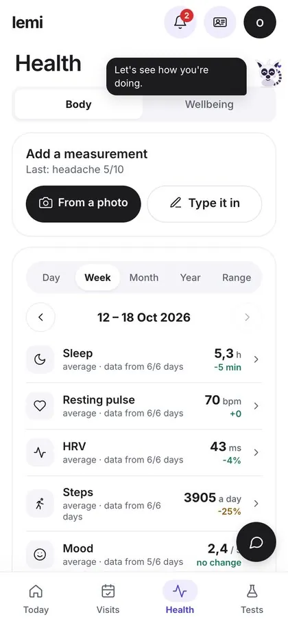

Design + code · Live
sidly.eu
Designed and built end to end: information architecture, UI and a React/TypeScript front-end, in seven languages.
Kacha · Warsaw
I design telecare software for the people who wear the devices, the carers who visit them and the municipalities that pay for it.
I build models and pipelines for the human side of products: flagging manipulative copy, catching frustration in clicks, and turning health data into something people read.



One visit, three people: the manager who plans it, the carer who makes it, the resident who receives it. I lead UX/UI across mobile and web.


Mobile screens shown in English for this page; the product ships in Polish. All names and data are test data.
The carer starts and ends each visit by scanning the resident's NFC tag with their phone. Work time is recorded as it happened, not as it was planned, and carers' hours are settled from it.
Before a visit the care card is the plan. During the visit the carer fills it in. After the visit it becomes the record that the resident and the office read, so it is locked as it was when the visit ended.
Am I all right, what do I need to do today, and when is someone coming? Large text, large touch targets, few words, and SOS always on top.
The manager's dashboard opens with what needs a reaction, then today's visits in the field, the week ahead and equipment. Each block leads to the screen where that issue gets solved.
A series is a set of normal visits that share a tag, so any single one can be moved or cancelled without breaking the rest.
The flows are built as a clickable React/TypeScript prototype with realistic test data, so managers and carers test whole visits instead of single screens.
The platform municipalities and care providers use to order telecare bands, assign them and keep consent in order. I lead its redesign.
The problem
Most of the work in the ERP is routine: activating a batch of bands, swapping a broken one, attaching a signed consent form. Mistakes in these tasks are easy to make and hard to notice. A band can be activated for the wrong client, or keep sending data under a person who no longer wears it.
The system also serves two very different clients. A Polish municipality works in złoty, uploads documents from its social-welfare office and tracks coverage of its residents aged 60+. An export client sells across borders, invoices in euro and needs dialling codes per country.
How I worked
Weekly project meetings with stakeholders, plus research with municipal and foreign clients about how they order, assign and renew devices.
I built the redesign as a clickable prototype in React and TypeScript with realistic test data, so whole flows can be tested instead of static mockups.
The life of an order and its bands, simplified. Numbers match the decisions below.
Asking twice for everything trains people to click through. A confirmation now appears only for a new paid year or a change to many devices at once. A single suspend or resume is reversible, so it gets an undo instead.
Bulk activation comes in as a spreadsheet, with columns in a different order every time. Rows are matched on the device number, and nothing runs until each line has been shown back with what it will do. The template you download is the file you can upload.
Health data needs signed consent, but the clerk entering a resident rarely has the scan at hand. Blocking the form only taught people to upload placeholder files. Now the resident can be saved, is flagged "no consent" everywhere, and cannot receive a band until the scan arrives.
Each count on the dashboard opens exactly the devices it counts, and each bar in the renewals chart renews what it shows. Nothing on the dashboard sends you hunting elsewhere.
With a mixed selection, each action states how many of the selected devices it would change and switches off at zero. The selection bar used to be the one dark element on the screen, which made ticking three rows feel like a warning. It is now calm, with one obvious next step.
Every status carries an icon and a label as well as a colour, because green and amber are hard to tell apart for colour-blind users.
Unreleased and confidential, so no screens here. Happy to walk you through the prototype in an interview.
1st place · AI Place Challenge 2025
Our team built GovBot, an assistant that helps people find the right local office or service. I led the team and built the AI part in n8n.
Set by the Polish Ministry of Digital Affairs · Econverse Smart Cities Hackathon, Warsaw


lemi
A friendly lemur for before, during and after a doctor's visit. Built at HackYeah 2026.
It started with me. I'm a student and I put off calling the doctor, not because I don't know what is wrong, but because I have to call, explain myself, remember everything in ten minutes and then keep track of the advice. At the hackathon I asked other people whether they felt the same. It was far more common than I thought, and each conversation added a group the app could help: people for whom Polish is not a first language, people with disabilities, neurodivergent people, seniors and their families, people with health anxiety.
Claude API / ElevenLabs Scribe / TypeScript / Flutter / health data stays on the phone




Shown in English for this page; the demo runs in Polish.
Design + code · Live
Designed and built end to end: information architecture, UI and a React/TypeScript front-end, in seven languages.
Brand · Packaging
Led the rebrand across the apps, the website, the Vital Care smartwatch packaging and events.
Research · B.A. thesis
NLP that detects manipulative UX copy. B.A. thesis, SWPS University.
Research · B.Eng. thesis
An AI health summary from a medical wristband. B.Eng. thesis.
Dark patterns live in the words: "Only 2 left!", "43 people are viewing this". I trained a classifier to spot them and shipped it as a Chrome extension.
Linen overshirt, sand
249 zł
A simplified version of the extension's rules, running in your browser. Nothing is sent anywhere.
What the model learned
Dark patterns use their own vocabulary: urgency ("hurry", "limited"), scarcity ("only", "left", "stock") and social proof ("people", "purchased"). Classical models on TF-IDF did surprisingly well; the rare categories suffered from too little data.
Why rules in the extension
The top features of the trained model were encoded as explicit rules, so the extension classifies fully offline, with no API calls. It highlights flagged copy on the page by severity and explains the psychological mechanism behind each one.
Wristband data and medical documents in; a readable health summary and recommendations out.
The code is private; happy to show it in an interview.
Rage clicks, abandoned sessions and stuck screens, flagged as they happen.
Data model
Users, screens, sessions and interactions, with every event scored for friction.
Mini data platform
The same stack as a one-command template, with bronze, silver and gold layers on MinIO.
Raw tracker events in, clean funnel metrics out. SQL on DuckDB.
The funnel, shape only
Data-quality rules in Silver
1st place · AI Place Challenge 2025
Our team built GovBot, an assistant that helps people find the right local office or service. I led the team and built the AI part in n8n.
Set by the Polish Ministry of Digital Affairs · Econverse Smart Cities Hackathon, Warsaw
HackYeah 2026
Reads health devices from a photo and turns a recorded visit into three summaries. Claude API and ElevenLabs.
Internship · 2025
Improving conversational AI chatbots for IKEA, LPP, x-kom and US creator stores.
Product design side
70,000+ people across 16 countries. The apps are in the design view.
Chrome extension that detects manipulative UX copy on e-commerce sites and warns users before they make a purchase decision.
JavaScript automated-dark-pattern-detectionMachine learning-based detection of dark patterns in e-commerce UX texts.
Jupyter Notebook ux-friction-detection-platformReal-time UX analytics with Kafka, Spark and Delta Lake, detecting rage clicks, abandonment and long screen times.
Python mini-data-platformDocker-based mini data platform using PostgreSQL, Debezium (CDC), Kafka, Spark Structured Streaming and MinIO with Delta Lake.
Python ELT-processesReproducible SQL ELT for product conversion-funnel analytics on a bronze, silver and gold model, running on DuckDB.
SQL All repositories →Everything public, including coursework and experiments.
github.com/kachastepienEvery project starts with what people actually do. Psychology taught me to listen; research with municipal and foreign clients shaped the SiDLY ERP before a single screen was drawn.
SiDLY ERP →I design the flow and build it as a clickable React prototype with realistic test data, so people test whole visits, not single screens.
SiDLY Health →Behaviour leaves data, and I model it: a classifier that catches manipulative copy, a stream that flags rage clicks as they happen.
Unmasked →UX friction →My best work sits in the overlap: AI products designed for real people. A health guide for anxious patients, an assistant for public services, a RAG assistant over medical records.
Lemi →HealthPlatform →Psychology and computer science, studied in parallel; now data science alongside management. I start from what people actually do and build prototypes real enough to argue with.
Stanford Code in Place (2026) · Google UX Design Certificate
Design
Data
Languages
Hi, I'm Kacha.
Venn runs in your browser. Only messages you choose to send reach Katarzyna.